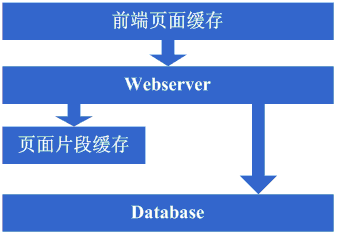
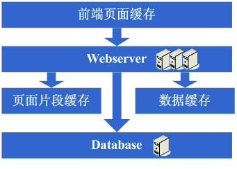
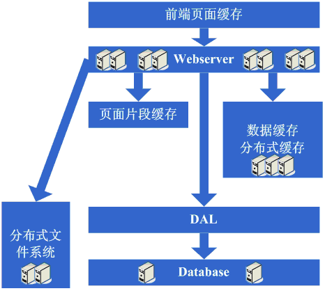
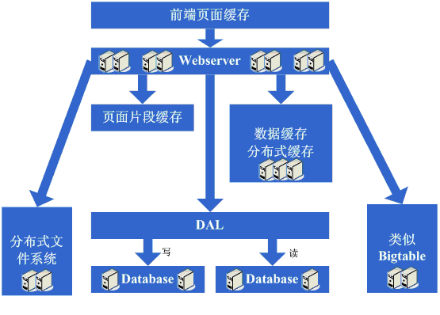

Anteriormente también había algunos artículos que presentaban la evolución de la arquitectura de sitios web a gran escala, como los de LiveJournal y eBay, que son muy dignos de referencia. Sin embargo, siento que hablan más sobre los resultados de cada evolución, sin explicar en detalle por qué fue necesario hacer tal evolución. Además, recientemente noto que muchos estudiantes tienen dificultades para entender por qué un sitio web necesita tecnología tan compleja, así que surgió la idea de escribir este artículo. En este artículo se explicará un proceso de evolución arquitectónica bastante típico de un sitio web ordinario hasta convertirse en un sitio web a gran escala, así como el sistema de conocimientos que se debe dominar. Espero poder dar a los estudiantes que quieran dedicarse a la industria de Internet un concepto preliminar. Si hay algo incorrecto en el artículo, por favor den sugerencias para que este artículo realmente sirva como punto de partida.
Primer paso de la evolución de la arquitectura: separación física del servidor web y la base de datos
Al principio, debido a algunas ideas, se creó un sitio web en Internet. En ese momento incluso el host podría ser alquilado, pero como este artículo solo se centra en el proceso de evolución de la arquitectura, asumamos que ya se tenía un host alojado y con cierto ancho de banda. En ese momento, como el sitio web tenía ciertas características, atrajo a algunas personas para visitarlo. Poco a poco descubres que la presión del sistema es cada vez mayor y la velocidad de respuesta cada vez más lenta. Y en este momento es más evidente que la base de datos y la aplicación se afectan mutuamente: si la aplicación tiene problemas, la base de datos también es propensa a tener problemas, y cuando la base de datos tiene problemas, la aplicación también es propensa a tenerlos. Así que se entra en la primera etapa de evolución: separar físicamente la aplicación y la base de datos, convirtiéndolas en dos máquinas. En este momento no hay nuevos requisitos técnicos, pero descubres que realmente tiene efecto: el sistema vuelve a la velocidad de respuesta anterior, soporta un mayor tráfico y ya no se afectan mutuamente la base de datos y la aplicación.
Mira el diagrama del sistema después de completar este paso:

Este paso involucra el siguiente sistema de conocimientos:
Esta evolución arquitectónica básicamente no tiene requisitos en cuanto al sistema de conocimientos técnicos.
Segundo paso de la evolución de la arquitectura: agregar caché de páginas
La buena racha no duró mucho. A medida que más y más personas visitaban, descubriste que la velocidad de respuesta comenzaba a bajar nuevamente. Al investigar la causa, encontraste que eran demasiadas operaciones de acceso a la base de datos, lo que provocaba una intensa competencia por las conexiones de datos, por lo que la respuesta se volvía lenta. Pero las conexiones a la base de datos no se pueden abrir demasiadas, de lo contrario la presión sobre la máquina de la base de datos sería muy alta. Por lo tanto, se consideró adoptar un mecanismo de caché para reducir la competencia por los recursos de conexión de la base de datos y la presión de lectura sobre la base de datos. En este momento, quizás primero se elija adoptar mecanismos como Squid para cachear las páginas relativamente estáticas del sistema (por ejemplo, páginas que solo se actualizan cada uno o dos días) (por supuesto, también se puede adoptar el esquema de convertir las páginas en estáticas). De esta manera, el programa no necesita modificarse y se puede reducir muy bien la presión sobre el servidor web y la competencia por los recursos de conexión de la base de datos. OK, entonces se comienza a usar Squid para el caché de las páginas relativamente estáticas.
Mira el diagrama del sistema después de completar este paso:

Este paso involucra el siguiente sistema de conocimientos:
Tecnología de caché de páginas front-end, por ejemplo Squid. Si se quiere usar bien, también es necesario dominar en profundidad la forma de implementación de Squid, así como los algoritmos de invalidación de caché, etc.
Tercer paso de la evolución de la arquitectura: agregar caché de fragmentos de página
Después de agregar Squid para el caché, la velocidad general del sistema realmente mejoró y la presión sobre el servidor web también comenzó a disminuir. Pero a medida que aumentaba el tráfico, descubriste que el sistema comenzaba a volverse un poco lento nuevamente. Tras probar los beneficios del caché dinámico como Squid, comenzaste a pensar si se podían cachear también las partes relativamente estáticas de las páginas dinámicas actuales. Por lo tanto, se consideró adoptar una estrategia de caché de fragmentos de página similar a ESI. OK, entonces se comenzó a usar ESI para cachear las partes de fragmentos relativamente estáticos de las páginas dinámicas.
Mira el diagrama del sistema después de completar este paso:

Este paso involucra el siguiente sistema de conocimientos:
Tecnología de caché de fragmentos de página, por ejemplo ESI, etc. Para usarla bien, también se necesita dominar la forma de implementación de ESI, etc.
Cuarto paso de la evolución de la arquitectura: caché de datos
Después de adoptar tecnologías como ESI para mejorar nuevamente el efecto de caché del sistema, la presión del sistema realmente se redujo aún más. Pero igualmente, a medida que aumentaba el tráfico, el sistema comenzaba a volverse lento. Tras investigar, es posible que descubras que hay lugares en el sistema donde se obtienen datos repetidamente, como la obtención de información de usuario. En este momento, empiezas a considerar si también se pueden cachear estos datos. Así que guardas estos datos en la memoria local. Una vez realizado el cambio, cumple completamente con lo esperado: la velocidad de respuesta del sistema se recupera y la presión sobre la base de datos vuelve a disminuir considerablemente.
Mira el diagrama del sistema después de completar este paso:

Este paso involucra el siguiente sistema de conocimientos:
Tecnología de caché, incluyendo estructuras de datos como Map, algoritmos de caché, mecanismos de implementación del propio framework elegido, etc.
Quinto paso de la evolución de la arquitectura: agregar servidor web
La buena racha no duró mucho. Descubriste que, con el nuevo aumento del tráfico del sistema, la presión sobre la máquina del servidor web subía bastante en las horas pico. En este momento se comenzó a considerar agregar un servidor web, también para resolver el problema de la disponibilidad, evitando que si un único servidor web se cae, el sitio quede inutilizable. Después de estas consideraciones, se decidió agregar un servidor web. Al agregar un servidor web, te encontrarás con algunos problemas, típicamente los siguientes:
1. ¿Cómo distribuir el acceso entre estas dos máquinas? En este momento, las soluciones que normalmente se consideran son el esquema de balanceo de carga integrado de Apache o esquemas de balanceo de carga por software como LVS;
2. ¿Cómo mantener la sincronización de la información de estado, como las sesiones de usuario? En este momento, las soluciones que se consideran incluyen escribir en la base de datos, escribir en almacenamiento, usar cookies o mecanismos para sincronizar la información de sesión, etc.;
3. ¿Cómo mantener la sincronización de la información de caché de datos, como los datos de usuario cacheados anteriormente? En este momento, los mecanismos que normalmente se consideran incluyen sincronización de caché o caché distribuido;
4. ¿Cómo mantener funcionando normalmente funciones similares como la subida de archivos? En este momento, el mecanismo que normalmente se considera es usar un sistema de archivos compartido o almacenamiento, etc.;
Después de resolver estos problemas, finalmente se aumentó el servidor web a dos máquinas, y el sistema finalmente volvió a la velocidad anterior.
Mira el diagrama del sistema después de completar este paso:

Este paso involucra el siguiente sistema de conocimientos:
Tecnología de balanceo de carga (incluyendo, pero no limitado a, balanceo de carga por hardware, balanceo de carga por software, algoritmos de carga, protocolos de reenvío de Linux, detalles de implementación de la tecnología elegida, etc.), tecnología activo-en espera (incluyendo, pero no limitado a, suplantación de ARP, Linux Heartbeat, etc.), tecnología de sincronización de información de estado o caché (incluyendo, pero no limitado a, tecnología de cookies, protocolo UDP, transmisión de información de estado, detalles de implementación de la tecnología de sincronización de caché elegida, etc.), tecnología de archivos compartidos (incluyendo, pero no limitado a, NFS, etc.), tecnología de almacenamiento (incluyendo, pero no limitado a, dispositivos de almacenamiento, etc.).
Sexto paso de la evolución de la arquitectura: dividir la base de datos
Después de disfrutar por un tiempo la felicidad del rápido crecimiento del tráfico del sistema, descubriste que el sistema comenzaba a volverse lento nuevamente. ¿Qué ocurría esta vez? Tras investigar, encontraste que la competencia por los recursos de conexión de la base de datos en algunas de las operaciones de escritura y actualización era muy intensa, lo que provocaba la lentitud del sistema. ¿Qué hacer entonces? En este momento, las opciones disponibles son el clúster de base de datos y la estrategia de dividir la base de datos. En cuanto a los clústeres, algunas bases de datos no los soportan muy bien, por lo que dividir la base de datos se convierte en una estrategia bastante común. Dividir la base de datos implica modificar el programa original. Después de realizar los cambios y lograr la división de la base de datos, bien, se alcanzó el objetivo: el sistema se recuperó e incluso fue más rápido que antes.
Mira el diagrama del sistema después de completar este paso:

Este paso involucra el siguiente sistema de conocimientos:
Este paso requiere más que nada hacer una división razonable desde el punto de vista del negocio para lograr la división de la base de datos; no hay otros requisitos en cuanto a detalles técnicos específicos.
Pero al mismo tiempo, con el aumento del volumen de datos y la división de la base de datos, es necesario hacer un mejor trabajo en el diseño, ajuste y mantenimiento de la base de datos. Por lo tanto, se plantean requisitos muy altos en cuanto a la tecnología en estos aspectos.
Séptimo paso de la evolución de la arquitectura: división de tablas, DAL y caché distribuido
Con la operación continua del sistema, el volumen de datos comenzó a crecer drásticamente. En este momento descubriste que después de dividir la base de datos, las consultas todavía eran un poco lentas, así que siguiendo la idea de dividir la base de datos, comenzaste a trabajar en la división de tablas. Por supuesto, esto inevitablemente requiere hacer algunas modificaciones en el programa. Quizás en este momento descubras que es algo complicado que la aplicación tenga que preocuparse por las reglas de división de la base de datos y de las tablas, por lo que surge la idea de agregar un framework común para implementar el acceso a datos con la base de datos y las tablas divididas. Esto corresponde al DAL en la arquitectura de eBay. Este proceso de evolución relativamente requiere bastante tiempo; por supuesto, también es posible que este framework común se comience a hacer después de completar la división de tablas. Al mismo tiempo, en esta etapa puede que descubras que el esquema anterior de sincronización de caché tiene problemas, porque el volumen de datos es demasiado grande, por lo que ya no es posible almacenar el caché localmente y luego sincronizarlo; se necesita adoptar un esquema de caché distribuido. Entonces, después de otra ronda de investigación y sufrimiento, finalmente se transfirió una gran cantidad de caché de datos a un caché distribuido.
Mira el diagrama del sistema después de completar este paso:

Este paso involucra el siguiente sistema de conocimientos:
La división de tablas también es principalmente una división desde el punto de vista del negocio; técnicamente involucra algoritmos de hash dinámico, algoritmos de hash consistente, etc.;
El DAL involucra bastantes tecnologías complejas, como la gestión de conexiones de base de datos (tiempos de espera, excepciones), el control de operaciones de base de datos (tiempos de espera, excepciones), el encapsulamiento de las reglas de división de la base de datos y de las tablas, etc.;
Octavo paso de la evolución de la arquitectura: agregar más servidores web
Después de completar el trabajo de división de la base de datos y de las tablas, la presión sobre la base de datos ya se ha reducido a un nivel bastante bajo, y comienzas de nuevo a vivir la feliz vida de ver cómo el tráfico aumenta explosivamente cada día. De repente, un día descubres que el acceso al sistema vuelve a tener una tendencia a volverse lento. En este momento, primero revisas la base de datos: la presión es normal. Luego revisas el servidor web y descubres que Apache está bloqueando muchas solicitudes, mientras que el servidor de aplicaciones es bastante rápido para cada solicitud. Parece que el número de solicitudes es demasiado alto, lo que provoca que tengan que hacer cola y esperar, y la velocidad de respuesta se vuelve lenta. Esto es fácil de resolver; generalmente, en este momento ya se tiene algo de dinero, así que agregas algunos servidores web. En este proceso de agregar servidores web, pueden aparecer varios desafíos:
1. El balanceo de carga por software de Apache o el de LVS ya no pueden soportar la programación de las enormes cargas de acceso web (número de conexiones, tráfico de red, etc.). En este punto, si el presupuesto lo permite, se adoptará la solución de comprar balanceadores de carga por hardware, como F5, Netsclar, Athelon, etc. Si el presupuesto no lo permite, la solución será clasificar lógicamente las aplicaciones de cierta manera y distribuirlas en diferentes clústeres de balanceo de carga por software.
2. Algunas soluciones originales, como la sincronización de información de estado y el intercambio de archivos, pueden convertirse en cuellos de botella y necesitan mejoras. Quizás en este momento, según la situación, se desarrollen sistemas de archivos distribuidos adaptados a las necesidades del negocio del sitio web.
Después de completar estas tareas, se comienza a entrar en una era de escalabilidad aparentemente perfecta e ilimitada. Cuando el tráfico del sitio web aumenta, la solución es seguir agregando servidores web.
Mira el diagrama del sistema después de completar este paso:

Este paso involucra los siguientes sistemas de conocimiento:
En este punto, con el continuo crecimiento del número de máquinas, el aumento de la cantidad de datos y los requisitos cada vez mayores de disponibilidad del sistema, se requiere una comprensión más profunda de las tecnologías adoptadas y la necesidad de desarrollar productos más personalizados según las necesidades del sitio web.
Paso nueve de la evolución de la arquitectura: separación de lectura y escritura de datos y soluciones de almacenamiento económicas
Un buen día, se descubre que esta era perfecta también está por terminar. La pesadilla de la base de datos aparece nuevamente ante los ojos. Debido a que se han agregado demasiados servidores web, los recursos de conexión de la base de datos siguen siendo insuficientes, y en este momento ya se ha realizado la partición de bases de datos y tablas. Al comenzar a analizar el estado de presión de la base de datos, se puede descubrir que la proporción de lectura/escritura de la base de datos es muy alta. En este momento normalmente se piensa en la solución de separación de lectura y escritura de datos. Por supuesto, esta solución no es fácil de implementar. Además, se puede notar que algunos datos almacenados en la base de datos son un desperdicio o consumen demasiado los recursos de la base de datos. Por lo tanto, en esta etapa, la evolución de la arquitectura que puede formarse es implementar la separación de lectura y escritura de datos, y al mismo tiempo desarrollar algunas soluciones de almacenamiento más económicas, como BigTable.
Mira el diagrama del sistema después de completar este paso:

Este paso involucra los siguientes sistemas de conocimiento:
La separación de lectura y escritura de datos requiere un dominio y comprensión profundos de estrategias como la replicación de la base de datos, standby, etc., y al mismo tiempo requiere contar con la capacidad técnica para implementarla por uno mismo.
La solución de almacenamiento económico requiere un dominio y comprensión profundos del almacenamiento de archivos del sistema operativo, y también requiere un dominio profundo de la implementación del lenguaje utilizado en el área de archivos.
Paso diez de la evolución de la arquitectura: entrada en la era de las grandes aplicaciones distribuidas y la era soñada de los clústeres de servidores económicos
Después de este largo y doloroso proceso, finalmente se vuelve a vivir una era perfecta: agregar continuamente servidores web puede soportar volúmenes de acceso cada vez mayores. Para los sitios web grandes, la importancia de la popularidad es indudable. A medida que la popularidad aumenta, las necesidades funcionales de todo tipo también comienzan a crecer explosivamente. En este momento, de repente se descubre que la aplicación web que originalmente estaba desplegada en el servidor web ya es muy grande. Cuando varios equipos comienzan a modificarla, resulta bastante inconveniente, la reutilización también es bastante mala, básicamente cada equipo ha hecho cosas más o menos repetidas, y el despliegue y el mantenimiento también son bastante problemáticos, porque copiar e iniciar el enorme paquete de aplicación en N máquinas requiere bastante tiempo, y cuando surge un problema no es fácil de localizar. Otra situación peor es que es muy probable que un error en una aplicación cause la indisponibilidad de todo el sitio. También hay otros factores como que la optimización es difícil de operar (porque las aplicaciones desplegadas en las máquinas tienen que hacer de todo, por lo que es imposible realizar una optimización específica). Según este análisis, se toma la firme decisión de dividir el sistema según sus responsabilidades, y así nace una gran aplicación distribuida. Por lo general, este paso requiere bastante tiempo porque se enfrentan muchos desafíos:
1. Después de dividir en un sistema distribuido, se debe proporcionar un marco de comunicación de alto rendimiento y estable, y debe admitir múltiples métodos diferentes de comunicación y llamadas remotas.
2. Dividir una aplicación enorme requiere mucho tiempo, y es necesario organizar el negocio y controlar las dependencias del sistema, etc.
3. Cómo operar y mantener bien esta enorme aplicación distribuida (gestión de dependencias, gestión del estado operativo, seguimiento de errores, optimización, monitoreo y alertas, etc.).
Después de este paso, la arquitectura del sistema entra aproximadamente en una etapa relativamente estable. Al mismo tiempo, también se puede comenzar a utilizar una gran cantidad de máquinas económicas para soportar el enorme volumen de acceso y la cantidad de datos. Combinando esta arquitectura y la experiencia acumulada en estos múltiples procesos de evolución, se adoptan diversos métodos para soportar volúmenes de acceso cada vez mayores.
Mira el diagrama del sistema después de completar este paso:

Este paso involucra los siguientes sistemas de conocimiento:
Este paso involucra una gran cantidad de sistemas de conocimiento. Se requiere una comprensión y dominio profundos de la comunicación, las llamadas remotas, los mecanismos de mensajería, etc. Se exige tener una comprensión clara desde la teoría, el nivel de hardware, el nivel de sistema operativo y la implementación del lenguaje utilizado.
El ámbito de la operación y mantenimiento también involucra muchos sistemas de conocimiento. En la mayoría de los casos, es necesario dominar la computación paralela distribuida, los informes, las tecnologías de monitoreo, así como las reglas y políticas, etc.
Dicho así, realmente no parece requerir mucho esfuerzo. El proceso de evolución clásico de la arquitectura de un sitio web completo es bastante similar a lo anterior. Por supuesto, las soluciones adoptadas en cada paso y los pasos de evolución pueden ser diferentes. Además, debido a que los negocios de los sitios web son distintos, habrá diferentes necesidades técnicas especializadas. Este blog se centra más en explicar el proceso de evolución desde la perspectiva de la arquitectura. Por supuesto, hay muchas tecnologías que no se mencionan aquí, como los clústeres de bases de datos, la minería de datos, la búsqueda, etc. Pero en el proceso de evolución real también se recurre a mejorar la configuración del hardware, el entorno de red, la modificación del sistema operativo, los espejos CDN, etc., para soportar un mayor tráfico. Por lo tanto, en el desarrollo real habrá muchas diferencias. Además, un sitio web grande necesita mucho más que lo anterior, como seguridad, operación y mantenimiento, operaciones comerciales, servicios, almacenamiento, etc. Hacer bien un sitio web grande es realmente difícil. Este artículo se escribe principalmente con la esperanza de generar más presentaciones sobre la evolución de la arquitectura de sitios web grandes.
Dirección del artículo original: http://www.blogjava.net/BlueDavy/archive/2008/09/03/226749.html
Haz clic para compartir notas
<p style="font-size:14px;">¡Las notas deben ser una ampliación del contenido de este artículo!</p><br> <p style="font-size:12px;"><a href="../tougao.html" target="_blank">Envío de artículos, haz clic aquí</a></p> <p style="font-size:14px;"><a href="./runoob-user-test-intro.html" target="_blank">Cómo obtener el código de invitación para registrarse</a></p> <h3 class="text-muted"><i class="fa fa-info-circle" aria-hidden="true"></i> ¡Antes de compartir notas, debes <a href=".." class="runoob-pop">iniciar sesión</a>!</h3> <p><a href="./runoob-user-test-intro.html" target="_blank">Cómo obtener el código de invitación para registrarse</a></p>